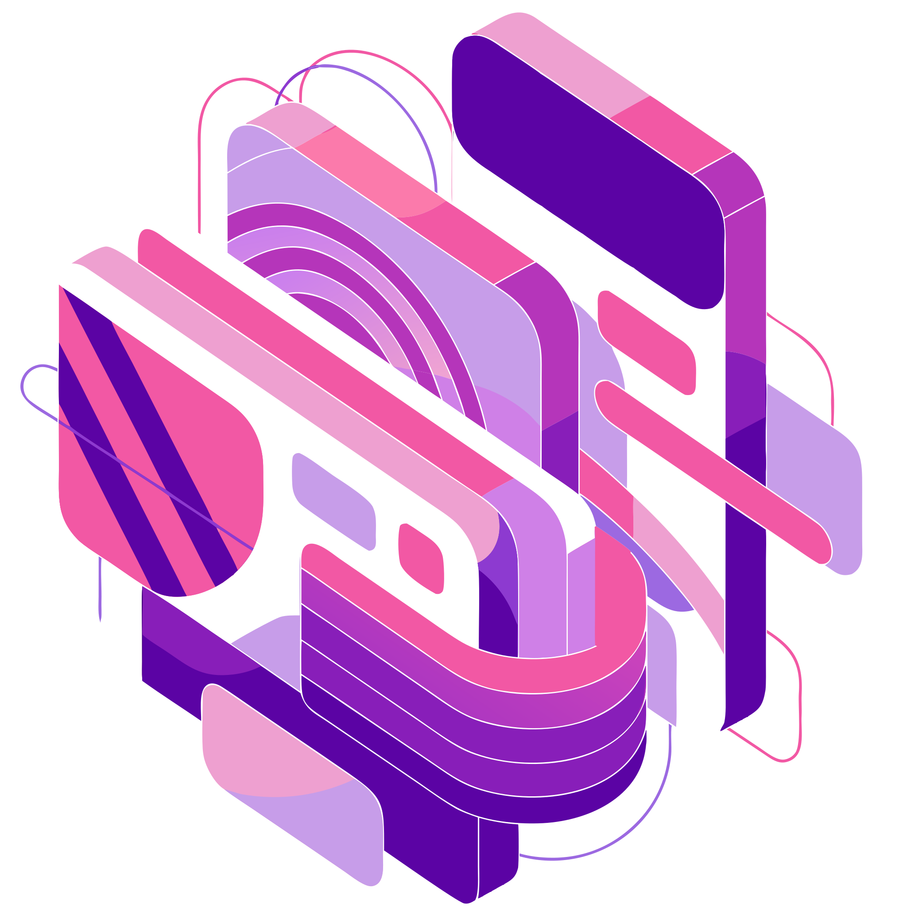
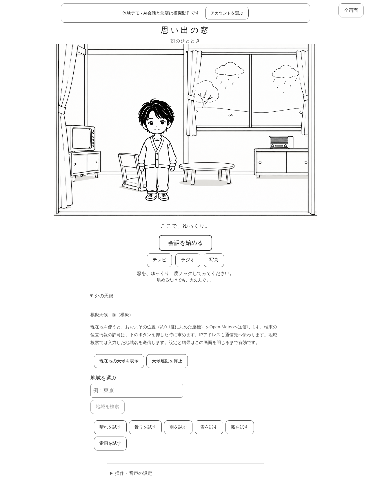

Featured Projects & Applications
実社会の課題解決（医療福祉・アクセシビリティ・地域支援）や、高度なデータサイエンス・システムプログラミング（音声基盤・地理空間PostGIS・気象物理）に応えるために、AI駆動開発（AI-Driven Development） とエンジニアリング知見を融合させて開発した主要ソフトウェアプロダクトのショーケースです。
また、各プロダクトには Emdash CMS × Astro を活用した専用の広報・マーケティングWebサイト（*-web）を構築し、開発からプロダクト周知・価値訴求までを一貫してAIオーケストレーションにより実現しています。
-
OutdoorCast (Cross-Platform & Emdash Web)

サーフィン、キャンプ、登山、釣りなど全18種類のアウトドアアクティビティに対応した気象・波浪判定プラットフォーム。FastAPI クリーンアーキテクチャ、React 18 + Capacitor、PostGIS 空間検索、そして Emdash CMS による 18 種目マトリクス対照・シミュレーター解説 Web（
outdoor-cast-web）を展開。FastAPIReact 18CapacitorSupabasePostGISEmdash CMSAstro SSRAI駆動開発 -
Personal Kakeibo（個人用家計簿）
iOS・iPadOS 17+ 向けのストレスフリーな個人用家計簿。3列ジャンル選択、00キー、日額・月額予算マネージャー、3枠リマインダー通知を完備。独自サーバー不要の SwiftData & CloudKit Private Database 同期。Emdash CMS による公式解説・料金訴求 Web（
personal_kakeibo-web）を併設。iOS 17+Swift 6SwiftUISwiftDataSwift ChartsCloudKitEmdash CMSAI駆動開発 -
Food Store Finder
自前Webサイトを保有しない飲食店・カフェ・食品店を地図上から抽出し、各種連絡先（メール、SNS、電話）を収集してExcel対応CSV出力するフルスタック分析ツール。API課金ゼロの Google Maps Universal URL スキームと OSM Overpass API 連携。
Next.js 14LeafletFastAPIPython (uv)OpenStreetMapCloudflare PagesCloud RunAI駆動開発 -
思い出の窓 (Memory Window)

白黒線画の窓の向こうに静かな暮らしを描く、遠隔見守り・生活リズム・対話支援 Web/PWA。2回タップでノック・生活挨拶。OpenAI Realtime WebRTC 音声対話（音声非永続化・ゼロリテンション）と、本人の版付き同意に基づく支援者共有機構を実装。
React 18TypeScriptVite (PWA)packages/coreSupabase Edge FunctionsPostgreSQL (RLS)WebRTCCapacitorAI駆動開発 -
MyoLink（マイオリンク）
神経・筋疾患（ALS、重症筋無力症、筋ジストロフィー等）患者向けの高精度医療用PRO収集機能と、日常コンディショニング・疲労管理を統合したハイブリッド・ヘルスケアアプリ。介助者代理入力や急変アラート判定エンジンを完備。Emdash CMS による広報展開（
myo-link-web）も進行中。Python 3.14FastAPIReact NativeExpo WebSQLAlchemyAccessibilityEmdash CMSAI駆動開発 -
AppAudioRouter
macOS 14.2+ 公式 CoreAudio Process Tap API とエフェメラル集約デバイスを用いた、カーネル拡張不要のメニューバー常駐型オーディオルーター＆ミキサー。Emdash CMS × Astro によるプロ向けダークモード特化プロダクトLP（
app-audio-router-web）を展開。SwiftSwiftUICoreAudiovDSPmacOSEmdash CMSAstroAI駆動開発 -
VirtualKeyboard with iPhone
上肢障害や筋力制限を持つ当事者のためのアクセシブル入力システム。使い慣れた iPhone のタッチ・音声入力を BLE 経由で PC に注入。Emdash によるアクセシビリティ訴求・導入ガイドLP（
virtual_keyboard_with_iphone-web）を展開。iOSSwiftPythonBLEAccessibilityAssistive-TechEmdashAI駆動開発
🤖 AI駆動開発（AI-Driven Development）の実践哲学
自律型AIエージェントと人間エンジニアが対等に協調する開発プロセスを導入し、設計から実装・自動テスト・広報Web立ち上げまでのリードタイムを劇的に短縮しています。
flowchart LR
A["人間エンジニア\n(ドメイン知識・福祉/気象/最適化)"] -->|要件定義 & 臨床/物理制約| B["AI駆動協調開発\n(Agentic Coding / LLM)"]
B -->|スキーマ設計 & 実装生成| C["高速プロトタイプ & 自動テスト\n(FastAPI / Swift / React / PostGIS)"]
B -->|広報・LP生成 (Emdash CMS × Astro)| E["宣伝・解説Web (*-web)\n(訴求ブロック / SQLite / Phosphor Icons)"]
C -->|フィードバック & リファクタリング| B
C -->|検証・リリース| D["エンタープライズ品質の\n実用プロダクト"]
E -->|プロダクト価値伝達| D1. ドメインエキスパートの洞察 × AIの生成力
- 医療現場の臨床指標（ALSFRS-R, MG-ADL）や、気象・波浪・潮汐の相互作用マトリクスなど、専門領域の複雑なビジネスロジックをAIとの対話的ナレッジエンジニアリングにより瞬時に定式化。
- 机上のコードにとどまらず、現場で本当に役立つ仕様を妥協なく短期間で実装。
2. 型安全性・テスト駆動の徹底自動化
- バックエンドからフロントエンドまでのエンドツーエンドの型整合性（Pydantic v2 ↔ TypeScript ↔ Zod）をAI支援で自動同期。
- ゴールデンテスト（TypeScript ↔ Python のスコア完全一致）、pytest、Playwright E2E テストを網羅的に自動生成し、個人・小規模開発でありながら高い堅牢性を担保。
3. Emdash CMS による広報・解説Web (*-web) の高速同時立ち上げ
- 各コアプロダクトの開発と並行して、Emdash CMS × Astro を用いた専用の解説・LPサイト（
outdoor-cast-web、personal_kakeibo-web、app-audio-router-web、virtual_keyboard_with_iphone-web等）を即座に構築。 - 単なる「コードの完成」にとどまらず、利用者に向けた機能解説、料金・安心感の訴求、FAQ、安全基準マトリクスまでを一気通貫で届けるプロダクトデリバリー体制を実現。
🛠️ プロダクト開発における重視事項
- 当事者・現場目線の課題解決 (User-Centered Engineering)
- 机上の理論にとどまらず、10年以上のNPO理事経験と福祉工学の知見を活かし、実際に身体的負荷や日々の不安を低減できるシステムを形にしています。
- OSの最新仕様・公式ベストプラクティスへの準拠 (Modern & Clean OS Integration)
- 非推奨の古いカーネル拡張（kext）やハック的インジェクションを避け、macOS の Process Tap や SwiftData、CloudKit Private Database、CoreBluetooth GATT などの堅牢な公式規格を採用しています。
- 低レイテンシ & プライバシー保護・安全性 (Privacy-First & Real-Time Safety)
- 会話音声の非永続化（思い出の窓）、完全ローカル保存（Personal Kakeibo）、オフラインBLE通信（VirtualKeyboard）など、利用者のプライバシーと安全を何よりも最優先に設計しています。